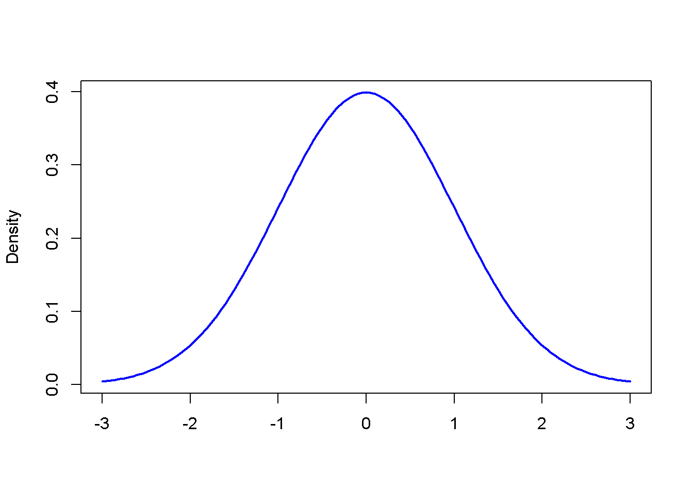
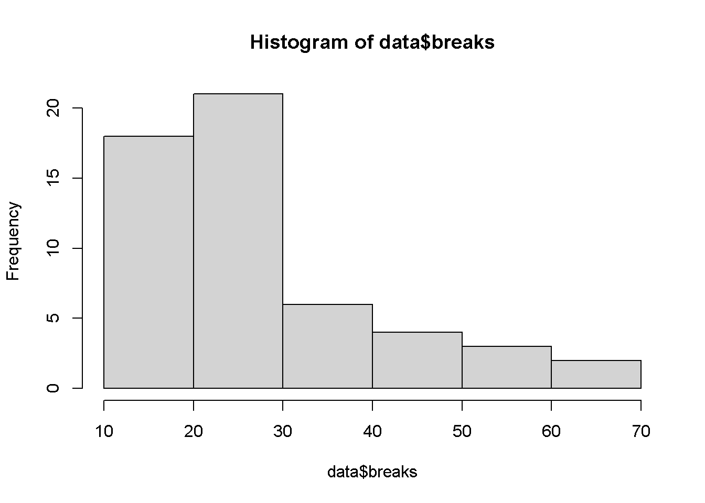

Chapter 4 Regresión de Poisson
4.1 ¿Qué son los modelos de regresión de Poisson?
Los modelos de regresión de Poisson se utilizan mejor para modelar eventos en los que se cuentan los resultados. O, más específicamente, contar datos: datos discretos con valores enteros no negativos que cuentan algo, como la cantidad de veces que ocurre un evento durante un período de tiempo determinado o la cantidad de personas en la fila en la tienda de comestibles.
Los datos de recuento también se pueden expresar como datos de tasa, ya que el número de veces que ocurre un evento dentro de un período de tiempo se puede expresar como una cuenta sin procesar (es decir, “En un día, comemos tres comidas”) o como una tasa (“Comemos a una tasa de 0,125 comidas por hora”).
La regresión de Poisson nos ayuda a analizar tanto los datos de recuento como los datos de tasa al permitirnos determinar qué variables explicativas (valores X) tienen un efecto en una variable de respuesta dada (valor Y, el recuento o una tasa). Por ejemplo, una tienda de comestibles podría aplicar la regresión de Poisson para comprender y predecir mejor la cantidad de personas en una línea.
4.2 ¿En qué se diferencia la distribución de Poisson de la distribución normal?
La distribución de Poisson se usa más comúnmente para encontrar la probabilidad de que ocurran eventos dentro de un intervalo de tiempo dado. Dado que estamos hablando de un recuento, con la distribución de Poisson, el resultado debe ser 0 o superior; no es posible que un evento ocurra un número negativo de veces. Por otro lado, la distribución normal es una distribución continua para una variable continua y podría resultar en un valor positivo o negativo:
| Distribución Poisson | Distribución Normal |
|---|---|
| Se utiliza para contar datos o tasa(razón) de datos. | Usada para variables contínuas |
| Sesgada según los valores de lambda | Curva en forma de campana que es simétrica alrededor de la media |
| Varianza igual que la media | La varianza y la media son parámetros diferentes; media, mediana y moda son iguales |
Podemos generar una distribución normal en R así:
# create a sequence -3 to +3 with .05 increments
xseq<-seq(-3, 3, .05)
# generate a Probability Density Function
densities <- dnorm(xseq, 0, 1)
# plot the graph
plot(xseq, densities, col = "blue", xlab = "", ylab = "Density", type = "l", lwd = 2)
# col: changes the color of line
# 'xlab' and 'ylab' are labels for x and y axis respectively
# type: defines the type of plot. 'l' gives a line graph
# lwd: defines line widthEn R, dnorm (secuencia, media, std.dev) se usa para trazar la función de densidad de probabilidad (PDF) de una distribución normal.
Para comprender la distribución de Poisson, considere el siguiente problema del libro de texto Tutorial R de Chi Yau:
Si hay 12 automóviles que cruzan un puente por minuto en promedio, ¿cuál es la probabilidad de que diecisiete o más automóviles crucen el puente en un minuto dado?
Aquí, la cantidad promedio de automóviles que cruzan un puente por minuto es \(\mu=12\).
ppois(q, u, lower.tail = TRUE) es una función R que da la probabilidad de que una variable aleatoria sea menor o igual a un valor.
Tenemos que encontrar la probabilidad de tener diecisiete o más autos, por lo que usaremos lower.trail = FALSE y estableceremos q en 16:
ppois(16, 12, lower.tail = FALSE)## [1] 0.101291# lower.tail = logical; if TRUE (default) then probabilities are P[X < = x], otherwise, P[X > x].Para obtener un porcentaje, simplemente necesitamos multiplicar esta salida por 100. Ahora tenemos la respuesta a nuestra pregunta: hay una probabilidad del \(10.1\%\) de tener 17 o más autos cruzando el puente en cualquier minuto en particular.
4.3 Modelos de regresión de Poisson y GLM(Generalized Linear MOdels)
Los modelos lineales generalizados son modelos en los que las variables de respuesta siguen una distribución diferente a la distribución normal. Eso contrasta con los modelos de regresión lineal, en los que las variables de respuesta siguen una distribución normal. Esto se debe a que los modelos lineales generalizados tienen variables de respuesta que son categóricas, como Sí, No; o Grupo A, Grupo B y, por lo tanto, no van de \(\infty\) a \(\infty\). Por tanto, la relación entre la respuesta y las variables predictoras puede no ser lineal. En GLM
\(y_i=\alpha+\beta_1X_{1i}+\beta_2X_{2i}+\ldots+\beta_pX_{pi}+e_i\), \(i=1,2,\ldots,n\)
La variable de respuesta \(y_i\) se modela mediante una función lineal de variables predictoras y algún término de error.
Un modelo de regresión de Poisson es un modelo lineal generalizado (GLM) que se utiliza para modelar datos de recuento y tablas de contingencia. La salida \(Y\) (recuento) es un valor que sigue la distribución de Poisson. Asume el logaritmo de los valores esperados (media) que pueden modelarse en forma lineal mediante algunos parámetros desconocidos.
Para transformar la relación no lineal en forma lineal, se utiliza una función de enlace que es el logaritmo de la regresión de Poisson. Por esa razón, un modelo de regresión de Poisson también se denomina modelo log-lineal. La forma matemática general del modelo de regresión de Poisson es:
\[log(y)=\alpha +\beta_1X_1+\beta_2X_2+\cdots+\beta_pX_p\]
donde,
\(y\) es la variable respuesta
\(\alpha\) y \(\beta\): son coeficientes numéricos, \(\alpha\) es la intersección, a veces \(\alpha\) también está representada por \(\beta_0\), es lo mismo.
x es la variable predictora/explicativa
Los coeficientes se calculan utilizando métodos como la Estimación de máxima verosimilitud (MLE) o la cuasi-verosimilitud máxima.
Considere una ecuación con una variable predictora y una variable de respuesta:
\[log(y)=\alpha+\beta(x) \]
Esto es equivalente a,
\[y=e^{\alpha+\beta X} \]
Nota: En los modelos de regresión de Poisson, las variables predictoras o explicativas pueden tener una combinación de valores numéricos o categóricos.
Una de las características más importantes para la distribución de Poisson y la regresión de Poisson es la equidispersión, lo que significa que la media y la varianza de la distribución son iguales.
La varianza mide la dispersión de los datos. Es el “promedio de las diferencias al cuadrado de la media.” La varianza (Var) es igual a 0 si todos los valores son idénticos. Cuanto mayor sea la diferencia entre los valores, mayor será la varianza. La media es el promedio de valores de un conjunto de datos. El promedio es la suma de los valores dividida por el número de valores.
Digamos que la media (\(\mu\)) se denota por \(E(X)\)
\[E(X)=\mu\] Para la regresión de Poisson, la media y la varianza se relacionan como:
\[var(X)=\sigma^2E(X) \] Donde \(\sigma^2\) es el parámetro de Dispersión.
Dado que \(var(X)=E(X)\) (varianza = media) debe ser válida para que el modelo de Poisson se ajuste completamente, \(\sigma^2\) debe ser igual a 1.
Cuando la varianza es mayor que la media, eso se denomina sobredispersión y es mayor que 1. Si es menor que 1, se conoce como subdispersión.
4.4 Modelado de regresión de Poisson utilizando datos de recuento.
En R, el comando glm ()se usa para modelar modelos lineales generalizados. Aquí está la estructura general de glm ():
glm(formula, family = familytype(link = ""), data,...)formula La fórmula es una representación simbólica de cómo se modela para ajustar.
family La familia indica la elección de las funciones de varianza y enlace. Hay varias opciones de familia, incluidas Poisson y Logistic.
datos Los datos son el conjunto de datos que se utilizará.
glm() ofrece ocho opciones para la familia con las siguientes funciones de enlace predeterminadas:
| Family | Default Link Function |
|---|---|
| binomial | (link = “logit”) |
| gaussian | (link = “identity”) |
| Gamma | (link = “inverse”) |
| inverse.gaussian | (link = $frac{1}{mu^2}$) |
| poisson | (link = “log”) |
| quasi | (link = “identity,” variance = “constant”) |
| quasibinomial | (link = “logit”) |
| quasipoisson | (link = “log”) |
4.4.1 ¡Empecemos a modelar!
Vamos a modelar la regresión de Poisson relacionada con la frecuencia con la que el hilo se rompe durante el tejido. Estos datos se encuentran en el paquete datasets en R, por lo que lo primero que debemos hacer es instalar el paquete usando install.packages("datasets") y cargar la biblioteca con la librería library(datasets):
# install.packages("datasets")
library(datasets) # include library datasets after installationEl paquetedatasetsincluye toneladas de conjuntos de datos, por lo que debemos seleccionar específicamente nuestros datos de hilo(yarn). Consultando la documentación del paquete, podemos ver que se llama warpbreaks, así que almacenémoslo como un objeto.
data<-warpbreaks
head(data,10)## breaks wool tension
## 1 26 A L
## 2 30 A L
## 3 54 A L
## 4 25 A L
## 5 70 A L
## 6 52 A L
## 7 51 A L
## 8 26 A L
## 9 67 A L
## 10 18 A MEchemos un vistaso a los datos:
columns<-names(data) # Extract column names from dataframe
columns # show columns## [1] "breaks" "wool" "tension"¿Qué hay en nuestros datos?
Este conjunto de datos analiza cuántas roturas de urdimbre ocurrieron para diferentes tipos de telares por telar, por longitud fija de hilo. Podemos leer más detalles sobre este conjunto de datos en la documentación aquí, pero aquí están las tres columnas que veremos y a qué se refiere cada una:
| Variable | Tipo | Descripción |
|---|---|---|
| breaks | numérica | número de roturas |
| wool | factor | El tipo de lana(A o B) |
| tension | factor | El nivel de tensión (L, M, H) |
Hay medidas en 9 telares de cada uno de los seis tipos de deformación, para un total de 54 entradas en el conjunto de datos.
Veamos cómo se estructuran los datos mediante el comandols.str ():
ls.str(warpbreaks)## breaks : num [1:54] 26 30 54 25 70 52 51 26 67 18 ...
## tension : Factor w/ 3 levels "L","M","H": 1 1 1 1 1 1 1 1 1 2 ...
## wool : Factor w/ 2 levels "A","B": 1 1 1 1 1 1 1 1 1 1 ...De lo anterior, podemos ver tanto los tipos como los niveles presentes en los datos. Lea esto para aprender un poco más sobre los factores en R.
Ahora trabajaremos con el marco de datos. Recuerde, con un modelo de distribución de Poisson estamos tratando de averiguar cómo algunas variables predictoras afectan una variable de respuesta. Aquí, breaks es la variable de respuesta y wool y tension son variables predictoras.
Podemos ver que la variable dependiente breaks de datos contínuos creando un histograma:
hist(data$breaks)
Claramente, los datos no tienen la forma de una curva de campana como en una distribución normal.
Veamos la media mean()y la varianza var ()de la variable dependiente:
mean(data$breaks) # calculate mean## [1] 28.14815var(data$breaks) # calculate variance## [1] 174.2041La varianza es mucho mayor que la media, lo que sugiere que tendremos una dispersión excesiva en el modelo.
Ajustemos el modelo de Poisson usando el comando glm ().
# model poisson regression using glm()
poisson.model<-glm(breaks ~ wool + tension, data, family = poisson(link = "log"))
summary(poisson.model)##
## Call:
## glm(formula = breaks ~ wool + tension, family = poisson(link = "log"),
## data = data)
##
## Deviance Residuals:
## Min 1Q Median 3Q Max
## -3.6871 -1.6503 -0.4269 1.1902 4.2616
##
## Coefficients:
## Estimate Std. Error z value Pr(>|z|)
## (Intercept) 3.69196 0.04541 81.302 < 2e-16 ***
## woolB -0.20599 0.05157 -3.994 6.49e-05 ***
## tensionM -0.32132 0.06027 -5.332 9.73e-08 ***
## tensionH -0.51849 0.06396 -8.107 5.21e-16 ***
## ---
## Signif. codes: 0 '***' 0.001 '**' 0.01 '*' 0.05 '.' 0.1 ' ' 1
##
## (Dispersion parameter for poisson family taken to be 1)
##
## Null deviance: 297.37 on 53 degrees of freedom
## Residual deviance: 210.39 on 50 degrees of freedom
## AIC: 493.06
##
## Number of Fisher Scoring iterations: 4summary () es una función genérica que se utiliza para producir resúmenes de los resultados de varias funciones de ajuste de modelos.
4.5 Interpretación del modelo de Poisson
Nos acaban de dar mucha información, ahora necesitamos interpretarla. La primera columna llamada Estimación son los valores de los coeficientes de \(\alpha\)(intersección), \(\beta_1\) y así sucesivamente. A continuación se muestra la interpretación de las estimaciones de los parámetros:
\(exp(\alpha)\)= efecto sobre la media \(\mu\), cuando \(X=0\)
\(exp(\beta)\) = con cada unidad de aumento en X, la variable predictora tiene un efecto multiplicativo de \(exp(\beta)\) sobre la media de Y, es decir \(\mu\).
Si \(\beta=0\), entonces \(exp(\beta)=1\), y el recuento esperado es \(exp(\alpha)\) y, Y y X no están relacionados.
Si \(\beta >0\), entonces \(exp(\beta)>1\), y el recuento esperado es \(exp(\beta)\) veces mayor que cuando \(X=0\)
Si \(\beta < 0\), entonces \(exp(\beta)<1\), y el recuento esperado es \(exp(\beta)\) veces menor que cuando \(X=0\)
Sifamily = poisson se mantiene en glm (), estos parámetros se calculan utilizando la estimación de máxima verosimilitud MLE.
R trata las variables categóricas como variables ficticias. Las variables categóricas, también llamadas variables indicadoras, se convierten en variables ficticias asignando a los niveles de la variable alguna representación numérica. La regla general es que si hay k categorías en una variable factorial, la salida de glm () tendrá k-1 categorías con 1 restante como categoría base.
Podemos ver en el resumen anterior que para la lana, “A” se ha hecho la base y no se muestra en el resumen. De manera similar, para la tensión, “L” se ha convertido en la categoría base.
Para ver qué variables explicativas tienen un efecto sobre la variable de respuesta, veremos los valores p. Si la p es menor que 0.05 entonces, la variable tiene un efecto sobre la variable de respuesta. En el resumen anterior, podemos ver que todos los valores de p son menores a 0.05, por lo que ambas variables explicativas (lana y tensión) tienen un efecto significativo en las roturas. Observe cómo la salida de R usó *** al final de cada variable. El número de estrellas significa significancia.
Antes de comenzar a interpretar los resultados, verifiquemos si el modelo tiene una dispersión excesiva o insuficiente. Si la desviación residual es mayor que los grados de libertad, entonces existe una dispersión excesiva. Esto significa que las estimaciones son correctas, pero los errores estándar (desviación estándar) son incorrectos y el modelo no los tiene en cuenta.
La desviación nula muestra qué tan bien se predice la variable de respuesta mediante un modelo que incluye solo el intercepto (gran media) mientras que el residual con la inclusión de variables independientes. Arriba, podemos ver que la suma de 3 (53-50 = 3) variables independientes disminuyó la desviación de 297.37 a 210.39. Una mayor diferencia de valores significa un mal ajuste.
Entonces, para tener un error estándar más correcto, podemos usar un modelo cuasi-poisson:
poisson.model2<-glm(breaks ~ wool + tension, data = data, family = quasipoisson(link = "log"))
summary(poisson.model2)##
## Call:
## glm(formula = breaks ~ wool + tension, family = quasipoisson(link = "log"),
## data = data)
##
## Deviance Residuals:
## Min 1Q Median 3Q Max
## -3.6871 -1.6503 -0.4269 1.1902 4.2616
##
## Coefficients:
## Estimate Std. Error t value Pr(>|t|)
## (Intercept) 3.69196 0.09374 39.384 < 2e-16 ***
## woolB -0.20599 0.10646 -1.935 0.058673 .
## tensionM -0.32132 0.12441 -2.583 0.012775 *
## tensionH -0.51849 0.13203 -3.927 0.000264 ***
## ---
## Signif. codes: 0 '***' 0.001 '**' 0.01 '*' 0.05 '.' 0.1 ' ' 1
##
## (Dispersion parameter for quasipoisson family taken to be 4.261537)
##
## Null deviance: 297.37 on 53 degrees of freedom
## Residual deviance: 210.39 on 50 degrees of freedom
## AIC: NA
##
## Number of Fisher Scoring iterations: 44.6 Comparando los modelos:
Ahora que tenemos dos modelos diferentes, comparémoslos para ver cuál es mejor. Primero, instalaremos la biblioteca arm porque contiene una función que necesitamos:
# install.packages("arm")
# load library arm that contains the function se.coef()
library(arm)## Loading required package: MASS## Loading required package: Matrix## Loading required package: lme4##
## arm (Version 1.11-2, built: 2020-7-27)## Working directory is C:/Users/Jaime/github/para-glm-curso/bookglmAhora usaremos esa funciónse.coef () para extraer los coeficientes de cada modelo, y luego usaremoscbind ()para combinar esos valores extraídos en un solo marco de datos para poder compararlos.
#extract coefficients from first model using 'coef()'
coef1 = coef(poisson.model)
# extract coefficients from second model
coef2 = coef(poisson.model2)
# extract standard errors from first model using 'se.coef()'
se.coef1 = se.coef(poisson.model)
# extract standard errors from second model
se.coef2 = se.coef(poisson.model2)
# use 'cbind()' to combine values into one dataframe
models.both<-cbind(coef1, se.coef1, coef2, se.coef2, exponent = exp(coef1))
# show dataframe
models.both## coef1 se.coef1 coef2 se.coef2 exponent
## (Intercept) 3.6919631 0.04541069 3.6919631 0.09374352 40.1235380
## woolB -0.2059884 0.05157117 -0.2059884 0.10646089 0.8138425
## tensionM -0.3213204 0.06026580 -0.3213204 0.12440965 0.7251908
## tensionH -0.5184885 0.06395944 -0.5184885 0.13203462 0.5954198En el resultado anterior, podemos ver que los coeficientes son los mismos, pero los errores estándar son diferentes.
Teniendo en cuenta estos puntos, veamos la estimación de la lana. Su valor es -0,2059884 y el exponente de -0,2059884 es 0,8138425.
1-0.8138425## [1] 0.1861575Esto muestra que cambiar de lana tipo A a lana tipo B da como resultado una disminución en las roturas de 0.8138425 veces la intersección, porque la estimación -0.2059884 es negativa. Otra forma de decir esto es que si cambiamos el tipo de lana de A a B, el número de roturas caerá en un \(18.6\%\) asumiendo que todas las demás variables son iguales.